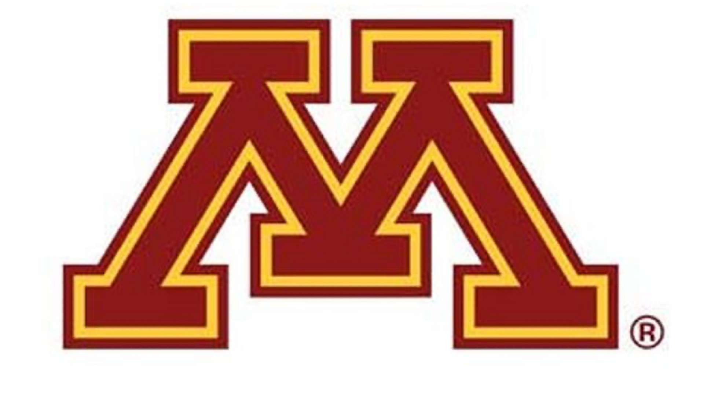
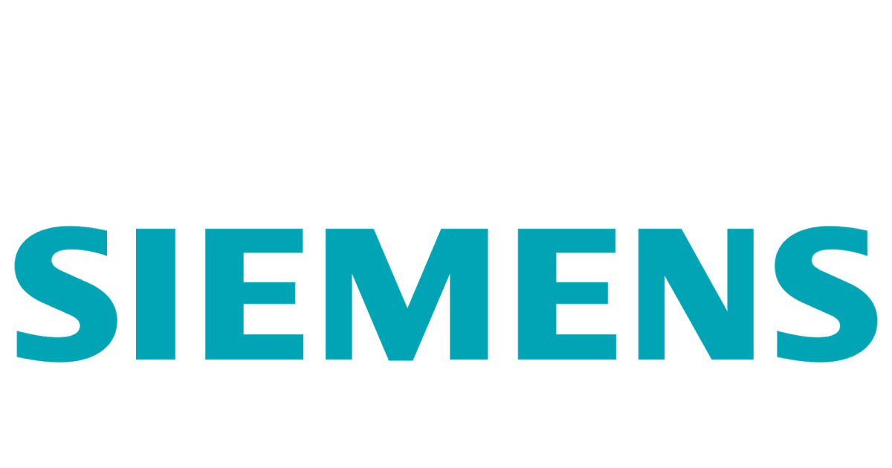
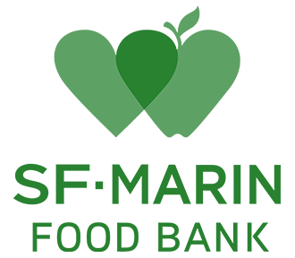

| |
Company |
Position |
Department |
During |
Duty |
|

|
University of Minnesota Minneapolis, USA |
On-Campus |
Facilities Management |
2020.6 - |
|
|
|
IDG Capital Beijing, China |
Summer Intern |
M&A |
2019.6 - 2019.8 |
- Guiding the data of NEVs batteries energy density into statistical model and predicting their efficiency and life
- Engaging and summarizing the information and data of ADAS and algorithms to build the database
- Designing web crawler in python to catch to the NIO stock information in NASDAQ
- Predicting the NIO stock price in next five years
- Worked closely with the department director to strategize and implement operations related to market research
|
|

|
Siemens
Tianjin, China |
Summer Intern |
|
2017.6 - 2017.8 |
- Organized the files of the engineering department
- Used abstract mathematical tools in solving problems
- Generated memos,emails,and reports when appropriate
|
|

|
San Francisco, USA |
Volunteer |
|
2018.6 - 2018.8 |
I have worked voluntarily in the food bank in 2018 summer, the relief agency that distributed food for low-earning families.
My main work duties are re-packaging foods and delivering denoted goods to a senior citizens residential buildings and San Francisco Marin food bank.
I believe the food bank is like a bridge between surplus food and people in need.
This is why I voluntarily use my free time to participate in the social practice activity, in order to better understand and recognize the social.
To me, providing service and aid to others is the most meaningful and satisfying job I can imagine.
|